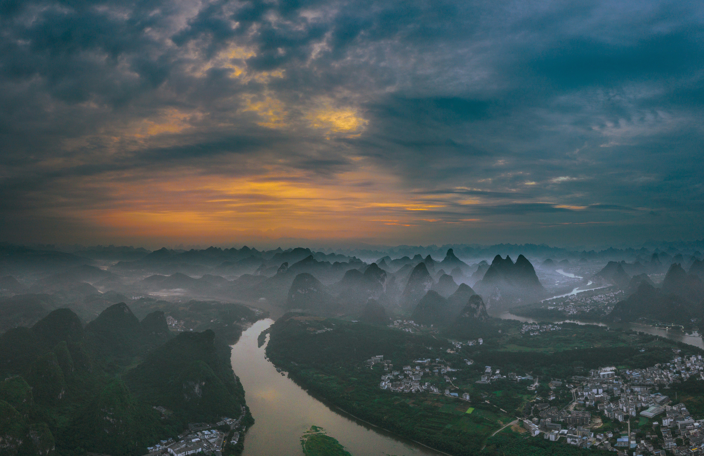

自然 · 山水
桂林山水
广西 · 桂林江水穿行在连绵山峰之间，村落与田野分布在山水两岸。
关于桂林
桂林的喀斯特山峰沿漓江分布，形成山体、江水和田野相互连接的景观。
乘船、骑行和步行能够从不同距离观察山峰与江面的变化。
推荐体验
- 乘船观察漓江两岸山峰
- 在阳朔乡间骑行
- 傍晚沿江散步看山色变化

自然 · 山水
江水穿行在连绵山峰之间，村落与田野分布在山水两岸。
桂林的喀斯特山峰沿漓江分布，形成山体、江水和田野相互连接的景观。
乘船、骑行和步行能够从不同距离观察山峰与江面的变化。